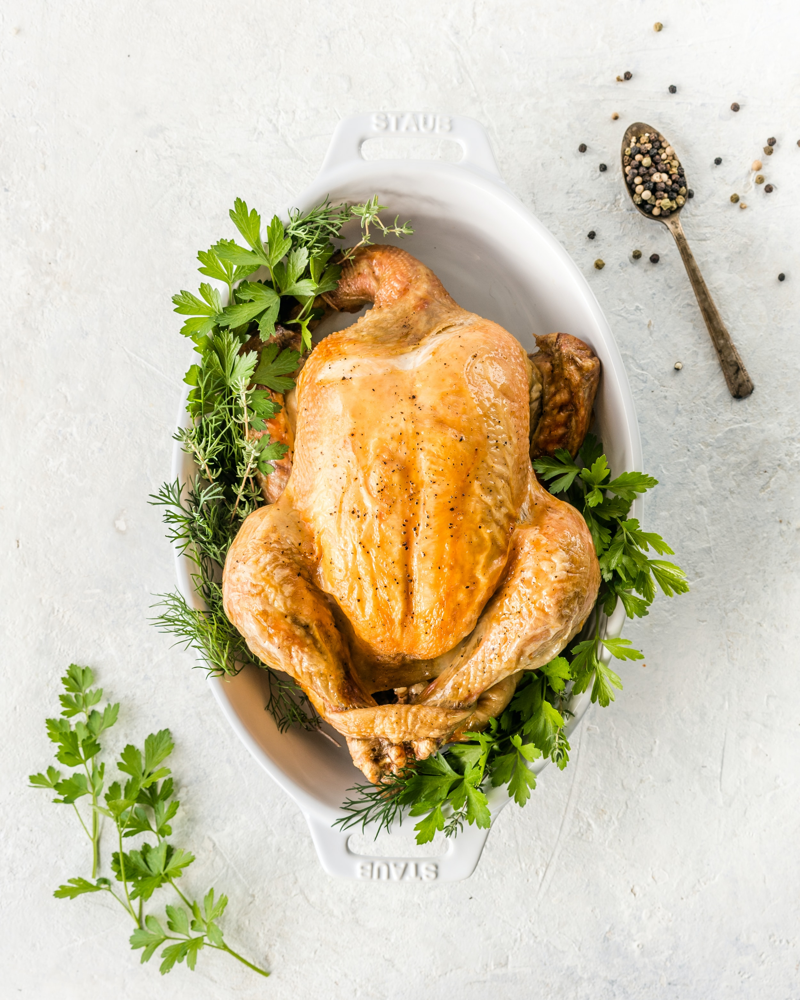

Chicken recipe
Chicken description
Whole garlic cloves take on a mild flavor when simmered with chicken in a simple white wine-mustard sauce.
Serve this garlic chicken recipe with smashed potatoes and sautéed green beans.
Ingredients
- 3 tablespoons extra-virgin oil
- 1 cup reduced-sodium chicken broth
- 2 teaspoons all-purpose flour
- 1 cup white wine
- Lightly smash garlic cloves with the side of a large knife to loosen the skins. Peel; cut larger ones in half. Sprinkle chicken with 1/4 teaspoon salt and pepper.
- Heat oil in a large skillet over medium heat. Add the garlic and cook, stirring, until beginning to brown, about 2 minutes. Remove to a plate with a slotted spoon.
- Add chicken to the pan and cook until browned on one side, about 4 minutes. Turn it over and return the garlic to the pan. Add wine and cook for 1 minute.
- Whisk broth, mustard, flour and the remaining 1/4 teaspoon salt in a small bowl. Add the mixture to the pan; bring to a boil, then reduce the heat to maintain a lively simmer. Cover and cook until the chicken is cooked through, 8 to 10 minutes. Serve sprinkled with chives (or scallion greens).